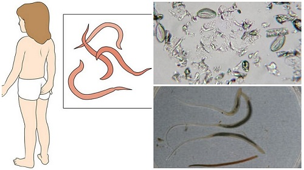

Острицы похожи на крошечные кусочки белых нитей длиной примерно 8 мм. Они живут и спариваются в желудочно-кишечном тракте ребенка. Беременная самка острицы отправляется вниз по желудочно-кишечному тракту и выходит наружу через анальное отверстие, чтобы отложить свои яйца, как правило, ночью. Вся эта деятельность приводит к тому, что кожа вокруг анального отверстия зудит. Когда ребенок чешет зараженную яйцами кожу, он подбирает яйца, которые затем попадают в рот ему, другим детям и другим членам семьи. Проглоченные яйца проходят в желудочно-кишечный тракт и повторяют круг. У девочек острицы могут также вызывать зуд во влагалище.

Хотя острицы могут жить только в людях, яйца в течение пары недель выживают на разных поверхностях, таких как постельное белье, полотенца, игрушки, и могут передаваться при контакте с ними. |
Женские особи остриц обычно умирают после того, как отложат яйца, поэтому сами острицы не передаются от человека к человеку, а только их яйца.

Признаки и симптомы:
Ночью разведите в стороны ягодицы ребенка и осветите фонариком анальное отверстие. Вы можете увидеть крошечных, белых, похожих на нити червячков вокруг анального отверстия и влагалища. Иногда глистов можно увидеть в испражнениях ребенка или на подгузниках и нижнем белье, когда ребенок просыпается утром.
ЧТО ДЕЛАТЬ
Не паникуйте, увидев остриц. Они надоедливые, но безобидные. И не нужно сообщать об этом открытии врачу посреди ночи.
Здоровье ребенка от докторов Сирс / Сирс У. и др.